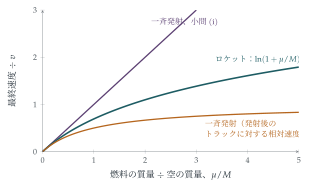

STEP III 2017、第11問
先に進む前に問題を読んでおこう。問題は STEP Support Programme の問題データベースにある： step.maths.org/questions/17-s3-q11
導入
宇宙空間にあるロケットには、押し返す相手が何もない。ロケットは質量を後方へ放り出すことで前進し、あとは運動量保存則（conservation of momentum）がすべてを決める。後部から砲を撃つトラックは、ロケットをばらばらに分解したものである。一つ一つの弾丸が排気の塊なのである。
では、砲は一斉に撃つべきか、それとも一つずつ順に撃つべきか。この問題ははっきりした答えを与えるが、何を比べているのかを注意深く見てほしい。一斉に撃つほうがトラックの速さは大きくなるが、使うエネルギーも多くなる。つまり、二つの場合で砲は同じ仕事をしているわけではない。何を固定するかを変えると、答えは逆転する。この点を整理していくと、宇宙飛行において最も重要な方程式であるツィオルコフスキー（Tsiolkovsky）のロケット方程式（rocket equation）にたどり着き、さらに実際のロケットがなぜ多段式なのかという理由にも行き着く。
取りかかる前に
砲を撃つ前、トラックは速度 \(V\) で動いている。発射後の弾丸の速度は \(V - v\) である（すなわち、後ろ向きに速さ \(v - V\)）。発射前のトラックに対する弾丸の相対速度はいくらか。
それは \((V - v) - V = -v\) である。したがって、各砲は発射直前のトラックの速度に対して速さ \(v\) で弾丸を後方へ撃ち出す。これがこの問題で固定されている規則である。答えを決めるのはこの規則なので、よく覚えておくこと。
順を追って解く
段階 1 一斉に発射する
系ははじめ静止しており、運動量は \(0\) である。発射後、トラック（質量 \(M\)）は前向きに速さ \(u\) で動き、\(n\) 個の弾丸は後ろ向きに速さ \(v\) で動く（発射前は \(V = 0\) だからである）。よって \[Mu - nmv = 0, \qquad u = \frac{nmv}{M}.\] 得られる運動エネルギー（kinetic energy）は \[K = \tfrac12Mu^2 + \tfrac12nmv^2 = \tfrac12\frac{n^2m^2v^2}{M} + \tfrac12nmv^2 = \tfrac12nmv^2\Bigl(1 + \frac{nm}{M}\Bigr). \qed\]
段階 2 一つずつ発射する
第 \(r\) 番目の砲を撃つ直前、残りの弾丸を載せたトラックの質量はいくらで、速さはいくらか。第 \(r\) 回目の発射について運動量保存の式を書け。
第 \(r\) 回目の発射の前、トラックは \(n - r + 1\) 個の弾丸を載せているので、質量は \(M + (n - r + 1)m\)、速さは \(u_{r-1}\) である。発射後、\(n - r\) 個の弾丸を載せたトラックの速さは \(u_r\) となり、撃ち出された弾丸の速度は \(u_{r-1} - v\) である。運動量は保存されるから \[\bigl(M + (n - r + 1)m\bigr)u_{r-1} = \bigl(M + (n - r)m\bigr)u_r + m(u_{r-1} - v).\] \(mu_{r-1}\) の項を整理すると \(\bigl(M + (n - r)m\bigr)(u_r - u_{r-1}) = mv\) となり、これが \((*)\) である。■
増分を足し合わせると \[u_n = \sum_{r=1}^{n}\frac{mv}{M + (n - r)m} = \frac{mv}{M} + \frac{mv}{M + m} + \cdots + \frac{mv}{M + (n - 1)m}.\] 最初の項以外はすべて \(\frac{mv}{M}\) より小さく、\(n > 1\) であるから、\(u_n < \frac{nmv}{M} = u\) である。■
ここではなぜ一つずつ撃つほうが不利なのだろうか。最初の砲を撃つとき、その砲はトラックとまだ撃たれていない \(n - 1\) 個の弾丸をまとめて加速しなければならない。そのため、何も載せていないトラックに対して撃つ場合よりも、速さの増加が小さくなるのである。
段階 3 エネルギーの収支
第 \(r\) 回目の発射における運動エネルギーの変化を書け。\(u_r^2 - u_{r-1}^2\) を含む項を簡単にするのに、\((*)\) はどのように役立つか。
運動エネルギーの変化は \[K_r - K_{r-1} = \tfrac12\bigl(M + (n - r)m\bigr)u_r^2 + \tfrac12m(u_{r-1} - v)^2 - \tfrac12\bigl(M + (n - r + 1)m\bigr)u_{r-1}^2.\] 後ろの二つの項をまとめると \(\frac12m(v^2 - 2vu_{r-1}) - \frac12\bigl(M + (n - r)m\bigr)u_{r-1}^2\) となる。次に、平方の差（difference of squares）を因数分解し、\((*)\) を用いると \[\tfrac12\bigl(M + (n - r)m\bigr)(u_r^2 - u_{r-1}^2) = \tfrac12mv(u_r + u_{r-1}).\] したがって \[K_r - K_{r-1} = \tfrac12mv(u_r + u_{r-1}) + \tfrac12mv^2 - mvu_{r-1} = \tfrac12mv^2 + \tfrac12mv(u_r - u_{r-1}). \qed\] \(r = 1\) から \(n\) まで和をとると、増分 \(u_r - u_{r-1}\) は望遠鏡和（telescoping sum）として打ち消し合い、\(u_n\) だけが残る。 \[K_n = \tfrac12nmv^2 + \tfrac12mvu_n. \qed\] 最後に、\(K = \frac12nmv^2 + \frac12nmv^2\cdot\frac{nm}{M} = \frac12nmv^2 + \frac12mvu\) であり、\(u_n < u\) であるから \(K_n < K\) である。■
振り返り
各段階ごとの運動量。 一回一回の発射は、荷を載せたトラックと一個の弾丸という小さな二体問題であった。
望遠鏡和。 増分 \((*)\) とエネルギーの増分は、きれいに足し合わされた。
結論を注意深く読む。 一斉に撃つほうが速さは大きくなるが、エネルギーも多くかかる。この問題は、異なる量の仕事をする二つの過程を比べているのである。
背後にある数学
何を固定すべきか
実際の砲やロケットエンジンは、弾丸が離れた直後に測った自分自身に対する相対速度が一定になるように弾丸を撃ち出す。この問題では、基準は発射前のトラックの速さである。弾丸が小さければこの違いはごくわずかだが、\(n\) 個の弾丸をすべて一斉に撃つ場合には大きな違いになる。小問 (i) では、重い弾丸の塊が、あたかもトラックがまったく反動（recoil）を受けないかのように速さ \(v\) で後方へ投げ出されており、そのためには多くのエネルギーが必要となる。
そうではなく、すべての弾丸が発射後のトラックに対して速さ \(v\) で離れるとすると、結論は逆転する。一斉に撃つと \(u = \frac{nmv}{M + nm}\) となり、一つずつ撃つと \(u_n = \sum_{k=1}^{n}\frac{mv}{M + km}\) となる。各項は \(\frac{mv}{M + nm}\) 以上であるから、後者のほうが大きい。今度は一つずつ撃つほうが有利である。各弾丸はすでに動いているトラックから押し出され、後の砲ほど加速すべき質量が少なくて済むからである。（演習問題で確かめよ。）
ロケット方程式
次に、全質量 \(\mu = nm\) を一定に保ったまま、弾丸を非常に小さく、非常に多くしていく。これは燃料を連続的に燃やすロケットである。\(u_n\) を表す和は積分（integral）になる（どちらの規約でも同じ極限が得られる）。 \[u_n = \sum_{k=0}^{n-1}\frac{mv}{M + km} \;\to\; \int_0^{\mu}\frac{v\,\mathrm{d}s}{M + s} = v\ln\frac{M + \mu}{M}.\] これがツィオルコフスキーのロケット方程式である。排気がロケットに対して速さ \(v\) で噴出するロケットは、次の速さを得る。 \[\Delta u = v\ln\frac{m_{\text{initial}}}{m_{\text{final}}}.\] 図 10.3.1 は三つの答えを比較したものである。問題となるのは対数である。排気速度（exhaust speed）が約 \(4.5\) km/s（優れた化学燃料）のとき、約 \(7.8\) km/s の軌道速度（orbital speed）に達するには、質量比（mass ratio）が \(e^{7.8/4.5} \approx 5.7\) でなければならず、空気抵抗と重力を考慮すれば \(10\) 以上に近くなる。ロケットのほとんどすべては燃料なのである。

ロケットが多段式である理由
対数は多段化（staging）の理由も説明する。途中で空になった燃料タンクを切り離すロケットは、もはやその無駄な質量を加速する必要がない。各段で得られる速さは（砲の場合と同じように）足し合わされる一方、各段の速さの増加はその段の質量の比で決まる。したがって、ロケットを複数の段に分けると、同じ全質量の一段式ロケットでは到達できない速さに達することができる。宇宙飛行士を月へ運んだサターンV（Saturn V）は三段式であり、その第一段は \(3\) 分足らずで約 \(2000\) トンの燃料を燃やした。
コンスタンチン・ツィオルコフスキーは、ロシアの地方都市カルーガの耳の不自由な教師であった。彼は1903年、「Exploration of outer space by means of reaction devices」（反作用装置による宇宙空間の探査）と題する論文でロケット方程式を発表した。彼は多段式ロケット、液体水素と液体酸素の燃料、宇宙ステーションについて、それらが実際に作れるようになる何十年も前に考察していた。この方程式はそれ以前にも、あまり目立たないところに現れていた（William Moore が1810年にその一つの形を導いている）が、それが宇宙飛行にとって何を意味するかを初めて見抜いたのはツィオルコフスキーであった。「地球は人類のゆりかごである。しかし、人はいつまでもゆりかごの中で暮らすことはできない」と彼は書いている。
思考のスキル
連続的な過程は、多くの小さな離散的段階の極限（limit）として理解できることが多い。離散的な問題を厳密に解き、それから段階の幅を小さくしていく。すると和は積分になる。
ここでは \(n\) 門の砲がロケットになり、和が対数になった。大学では、物理法則を導くたびに同じ手法を目にするだろう。小さな要素を解析し、その結果を足し合わせて積分や微分方程式（differential equation）にするのである。
次の一歩
もう一つの規約。 各弾丸が発射後のトラックに対して速さ \(v\) で離れるとして、小問 (i) と (ii) をやり直せ。このときは一つずつ撃つほうが最終速度が大きくなることを示せ。
塵の雲の中の彗星。 STEP III 2009、第11問 に挑戦せよ。ロケットと同様の可変質量（variable mass）の問題であるが、彗星は質量を失うのではなく得ていく。彗星の速さが近づいていく値に注目せよ。
二段式。 排気速度 \(v\)、空の質量 \(M\)、燃料の質量 \(9M\) のロケットがある。その最終速度を求めよ。次に、これを空の質量 \(\frac12M\)、燃料 \(4.5M\) の二つの段に分け、第一段は空になった時点で切り離すとする。最終速度を比較せよ。
不等式。 区間 \([0, x]\) 上で \(\frac{1}{1 + s}\) を \(1\) および \(\frac{1}{1 + x}\) と比較することにより、\(x \geq 0\) に対して \(\frac{x}{1 + x} \leq \ln(1 + x) \leq x\) を証明せよ。
さらに学ぶために
Daniel Kleppner & Robert Kolenkow, An Introduction to Mechanics（Cambridge University Press）、第4章。運動量、可変質量、ロケット方程式。
George Sutton & Oscar Biblarz, Rocket Propulsion Elements（Wiley）。工学の標準的な教科書。冒頭の数章は、この節を読んだ後なら読みこなせる。
Hermann Oberth, Ways to Spaceflight（NASA による英訳、オンラインで無料公開）。宇宙開発の先駆者オーベルト（Oberth）自身による解説。